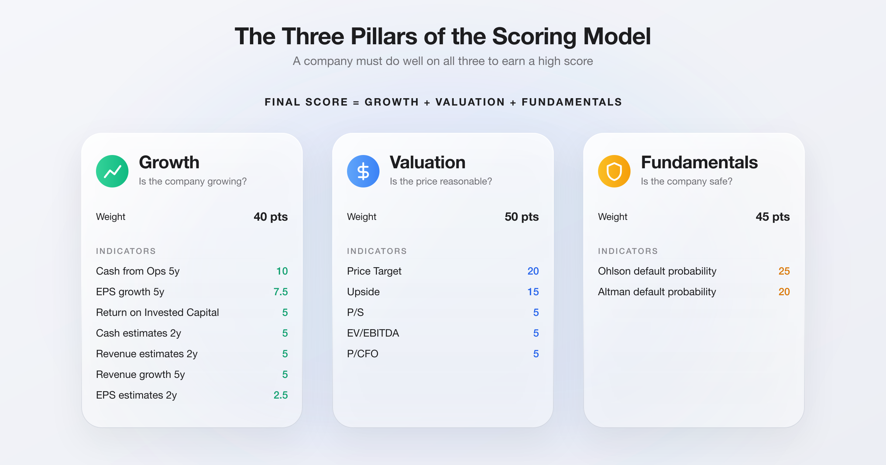

Article
How to evaluate a stock?
A scoring model explained in plain English. A company must do well on all three pillars to earn a high score.
Final score = Growth + Valuation + Fundamentals
This explains a method for comparing companies. It is not a recommendation to buy or sell any stock.
Where does this model come from?
The model is based on the teachings of Tomasz Trela’s Investment University (Uniwersytet Inwestycyjny), a course that teaches investing the way professionals managing large funds do it. It draws on the CFA program, an international qualification for financial analysts that is widely regarded as the gold standard in the industry. Tomasz Trela also runs an excellent YouTube channel about investing, a useful place to see the approach before deciding on the course.
Instead of chasing hot tips or guessing from charts, this approach asks three simple questions about every company:
- Is the company growing?
- Are its shares cheap or expensive?
- Is the company safe, and will it stay in business?
The scoring model answers these questions with numbers. It is implemented in the Scrab platform.
How does it work? The school analogy
Think of a school report card. A student gets grades in several subjects, and then an average is calculated, a weighted one, because maths counts for more than art.
The scoring model works the same way.
- Subjects are financial indicators, for example how much revenue grew over 5 years.
- Grade is the number of points a company gets for a given indicator.
- Subject weight tells you how much each indicator counts towards the final result.
- Final score is the sum of all points. The higher it is, the better the company according to the model.
This makes it possible to compare hundreds of companies quickly and pick the strongest, instead of reading hundreds of reports.
Where does the grade come from?
How do you turn “revenue grew by 80%” into a grade? This is where grading scales come in.
For every indicator, two thresholds are set: poor and excellent. For 5-year revenue growth the scale is 50–250%.
- Growth of 50% or less0 points, poor
- Growth of 150%About half the points
- Growth of 250% or moreMaximum points
It’s like percentage thresholds at school: below 50% you fail, above 90% you get an A, and in between the grade rises gradually.
Why do it this way?
- So that different things can be added together. Percentages, multiples, and probabilities are different units. The scale converts them all into points that can be summed.
- So that mediocrity isn’t rewarded. A company that grew 10% gets the same as one that shrank: zero. The model looks for genuinely good companies, not okay ones.
- So that one record doesn’t hide everything else. A company that grew 1000% gets the same as one that grew 250%: the maximum. A single spectacular result can’t mask, say, a risk of bankruptcy.
For some indicators, lower is better, for example bankruptcy risk. In that case the scale works in reverse.

The three pillars of the model
1. Growth 40 pts
Is the company really growing?
The model looks backwards, at what the company achieved over the last 5 years, and forwards, at what analysts expect over the next 2 years. It checks three things: revenue (how much the company sells), earnings per share (how much it earns per single share), and cash from operations (how much real money actually comes in).
Why does cash carry the most weight? Because accounting profit can be tweaked, but cash in the bank cannot. If a company says it’s making money and cash isn’t piling up, something is wrong.
How much cash from day-to-day operations grew over 5 years. Scale 100–350%. The most important growth indicator.
How much earnings per share grew over 5 years. Scale 35–200%.
How much the company earns for every dollar invested in it. Think of it as the interest rate the business pays. Scale 10–30: 10% is decent, 30% is excellent.
How much analysts expect cash flow to grow over the next 2 years. Scale 5–40.
How much analysts expect revenue to grow over the next 2 years. Scale 5–20.
How much revenue grew over 5 years. Scale 50–250%.
How much analysts expect earnings per share to grow over the next 2 years. Scale 5–30.
The thresholds are high. The model isn’t looking for companies that grow somewhat. It’s looking for those that grow fast.
2. Valuation 50 pts
Are the shares too expensive?
Even a great company can be a bad investment if you overpay. It’s like buying a flat: beautiful and well located, but at three times the market price, a bad deal.
The first three indicators are multiples. They tell you how many dollars you pay for every dollar the company generates. The lower the multiple, the cheaper the stock. The next two are based on price targets: what professional analysts think the share should be worth in a year. Together, 35 of the 50 points depend on analyst opinions. The model treats their consensus as an important reference point.
Whether the share trades below the price target. Scale −10% to 0%. If it costs more than analysts consider fair, it gets 0 points: the market has already priced in the good news.
By what percentage the price target exceeds the current price. If a share costs $100 and analysts say it should be worth $130, the upside is 30%.
Price to sales. How much you pay for every dollar of the company’s revenue.
The value of the whole company, including its debt, relative to profit from its core business. A heavily indebted company is more expensive than it looks.
Price to cash from operations. How much you pay for every dollar of real cash the company produces.
Analysts can be wrong, of course. But they usually specialise in a single sector for years and know it far better than an individual investor ever could. Their consensus is not something to follow blindly. It is a credible signal, and it deserves a place in the assessment.
3. Fundamentals 45 pts
Will the company stay in business?
This is the safety pillar. You can find a fast-growing, cheap company, but if it goes bankrupt next year, you lose everything.
Instead of checking dozens of debt ratios, the model uses two ready-made bankruptcy tests, developed by academics from thousands of companies that actually failed or survived. Each test takes a handful of numbers from the financial statements — debt, profits, liquidity, and size — and calculates a single risk score.
The Ohlson test. The lower the value, the lower the risk of bankruptcy. Here lower is better, so the scale is reversed: 2 is poor, 0 is excellent.
The Altman test, the Z-score, in use since the 1960s. Values below about 1.8 mean the distress zone, above about 3 the safe zone. The model’s scale, 1.25–3.00, covers that transition.
Why does this pillar carry 45 points? Because investing follows one rule: first don’t lose, then make money.
How it works on Scrab
Calculating all these indicators by hand for hundreds of companies would be impossible. This is where the Scrab platform comes in. It scans companies listed on stock exchanges around the world and applies the scoring model to each of them. The result is a ranking: companies that, according to the model, have the greatest potential.
The system pulls fresh data every day, recalculates the indicators, and shows a new score. The ranking is alive. A company that was in the top ten yesterday may drop to twentieth place today because the share price rose and the upside shrank, or because analysts cut their forecasts.
That does not mean you have to sell a stock right away when it drops a few places. Daily fluctuations are normal. The ranking is there to find candidates for a portfolio and to notice when something worrying is happening, not for nervous trading.
You don’t have to use Scrab. It is simply the platform where this model is available out of the box. Other tools offer similar screening. What matters is the method, not the brand.
Numbers aren’t everything
A high ranking score is an invitation to do more work, not a ready-made decision. The model tells you what the numbers show, but not why. On top of the scoring, you need qualitative analysis: how the industry is developing, how the company makes money, and what protects it from competitors.
Indicators describe the past, in financial statements, and forecasts, from analysts. Both react with a delay. Before a new competitor, a regulatory change, or the loss of a key contract shows up in revenue and margins, several quarters may pass, even if the event itself was known immediately. The ranking tells you where to look. Qualitative analysis helps you decide whether to buy.
Summary
At its core, the scoring model is a professional analyst’s checklist turned into points.
| Pillar | Question | Weight |
|---|---|---|
| Growth | Is the company growing? | 40 |
| Valuation | Is the price reasonable? | 50 |
| Fundamentals | Is the company safe? | 45 |
We’re looking for companies that grow fast, are reasonably priced, and are not at risk of bankruptcy. No single pillar is enough on its own.
- A fast-growing company at an absurd price: high Growth, low Valuation.
- A cheap company on the brink of collapse: high Valuation, low Fundamentals.
- A safe, cheap company that has stood still for years: low Growth.
Only a company that does well across all three pillars gets a high final score. This balance, rather than a single magic indicator, is the essence of the CFA approach on which the Investment University is built.
How and when to rebalance a portfolio based on the ranking is the next article.